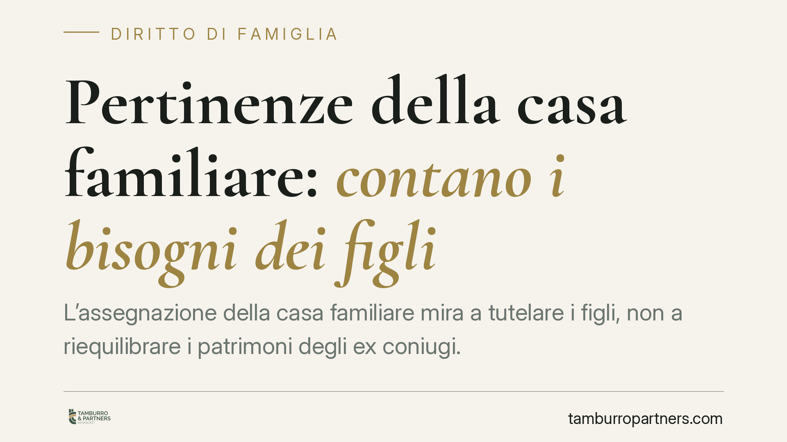

Pertinenze della casa familiare: contano i bisogni dei figli
L'assegnazione della casa familiare mira a tutelare i figli, non a riequilibrare i patrimoni degli ex coniugi. Ma cosa accade a garage, cantine, giardini e posti auto? Questi beni accessori seguono l'abitazione solo quando rispondono a un'esigenza concreta dei figli. Un principio radicato nella funzione stessa dell'istituto, che conviene conoscere prima di avviare qualsiasi trattativa o contenzioso.

Il contesto
Quando una coppia con figli si separa o divorzia, uno dei nodi più ricorrenti è la sorte della casa familiare. L'assegnazione di questa abitazione a uno dei genitori risponde a una logica precisa: garantire ai figli la continuità dell'ambiente domestico in cui sono cresciuti.
Meno discussa, ma altrettanto rilevante nella pratica, è la questione delle pertinenze: box auto, cantine, soffitte, giardini, posti auto scoperti. Seguono automaticamente la casa oppure vanno valutate a parte? La risposta incide sia sull'uso quotidiano dell'immobile sia sugli equilibri economici tra gli ex coniugi.
Inquadramento normativo
Il riferimento centrale è l'art. 337-sexies del Codice civile, secondo cui il godimento della casa familiare è attribuito tenendo prioritariamente conto dell'interesse dei figli. Si tratta di una funzione protettiva: l'assegnazione non è uno strumento per compensare squilibri patrimoniali né per premiare il coniuge economicamente più debole. Il criterio guida è l'interesse del minore (o del figlio maggiorenne non ancora autosufficiente) a conservare il proprio centro di vita.
Le pertinenze vanno lette alla luce dell'art. 817 c.c., che le definisce come le cose destinate in modo durevole al servizio o all'ornamento di un altro bene. In via generale, gli atti e i rapporti giuridici relativi al bene principale si estendono alle pertinenze. Nel diritto di famiglia, però, questa regola non opera in modo meccanico.
La logica è coerente con la funzione dell'istituto: se la casa familiare viene assegnata nell'interesse dei figli, anche le sue pertinenze seguono quella stessa misura solo nella parte in cui servono a soddisfare un bisogno dei figli. Un box auto può rientrare nell'assegnazione se funzionale alla gestione familiare; una seconda cantina o un ampio terreno accessorio, privi di un collegamento concreto con le esigenze dei minori, possono invece restare fuori dal perimetro dell'assegnazione e tornare alla ordinaria disciplina della proprietà o della comunione.
Cosa cambia nella pratica
L'applicazione concreta del principio produce conseguenze ben definite.
- L'assegnazione non è un blocco unico e indivisibile. Il giudice può assegnare la casa escludendo alcune pertinenze che non rispondano a esigenze dei figli.
- Il criterio è il bisogno effettivo, non la comodità. Il fatto che una pertinenza faccia comodo al coniuge collocatario non basta: occorre un collegamento con le necessità dei figli.
- Le valutazioni patrimoniali restano separate. Il valore economico del bene accessorio non è il metro dell'assegnazione. Chi punta a ottenere una pertinenza per ragioni di convenienza economica si muove sul piano sbagliato.
- Piano dell'uso e piano della proprietà non coincidono. L'assegnazione attribuisce il godimento, non modifica la titolarità. Un box escluso dall'assegnazione resta nella disponibilità del proprietario o nella comunione, da regolare in sede di divisione.
La distinzione tra i due piani è decisiva. Da un lato l'interesse dei figli, che governa l'assegnazione del godimento. Dall'altro gli assetti proprietari, che si definiscono con le regole della divisione dei beni. Confondere i due ambiti è l'errore più frequente nelle trattative.
Cosa fare in concreto
- Mappate l'immobile e le sue pertinenze prima di avviare la negoziazione: individuate quali beni accessori sono davvero funzionali alla vita quotidiana dei figli.
- Documentate il bisogno, non la semplice utilità: ad esempio la necessità del box per il trasporto scolastico o del giardino per uno spazio di gioco del minore.
- Separate sempre le due questioni: disciplinate l'assegnazione del godimento in un capo, e i rapporti di proprietà o comunione in un altro, evitando sovrapposizioni.
- Formalizzate con precisione l'oggetto dell'assegnazione negli accordi, indicando espressamente quali pertinenze sono incluse ed escluse, per prevenire contenziosi successivi.
- Rivolgetevi a un legale per valutare il caso specifico: la delimitazione tra bisogno dei figli e convenienza personale è questione di merito, da verificare sui fatti concreti.
Nota
Consigliamo di affrontare la questione delle pertinenze con la stessa attenzione dedicata all'abitazione principale. Una definizione imprecisa dell'oggetto dell'assegnazione può generare conflitti futuri su spazi che sembravano marginali.
---
Contributo informativo a cura di Tamburro & Partners Avvocati - Avv. Giuseppe Tamburro. Non costituisce parere legale.
Ogni famiglia ha il suo equilibrio.
Separazione, divorzio, affidamento, assegno: se vuoi un confronto riservato su una specifica situazione, scrivi allo studio. Ti rispondiamo entro un giorno lavorativo.